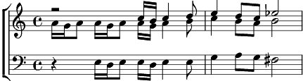

Eternel est mon berger (l')
Do majeur
Paroles: Jean-Pierre Noverraz
Musique: Jean-Pierre Noverraz

L'Eternel est mon berger
Je ne manquerai de rien
Il me fait reposer dans de verts pâturages (2x)
Il me mène,
Il me mène à des eaux, des eaux paisibles
Il restaure mon âme
Il me mène dans les sentiers,
Les sentiers de la justice à cause de son nom
Même si je marchais par la vallée
De l'ombre de la mort (2x)
Je ne crains aucun mal
Car Tu es avec moi (2x)
C'est Ton bâton et Ta houlette qui me consolent
L'Eternel est mon berger.